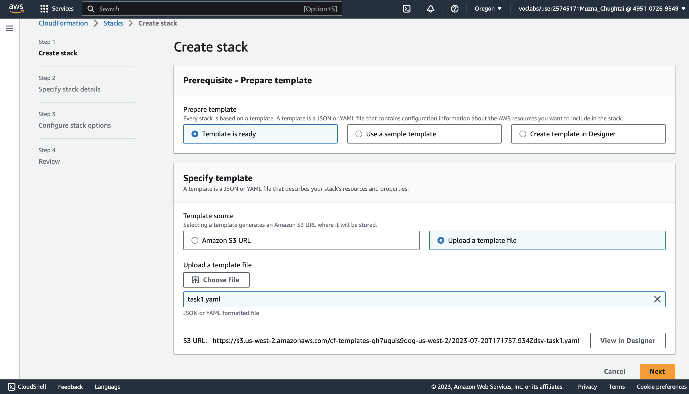
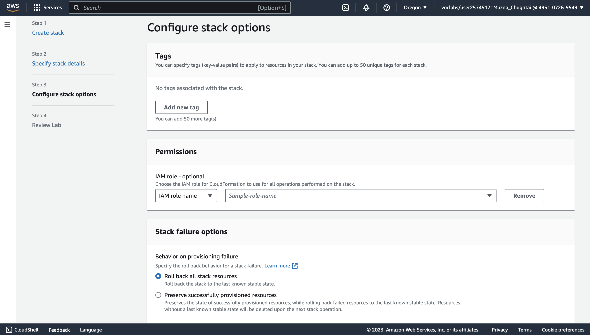
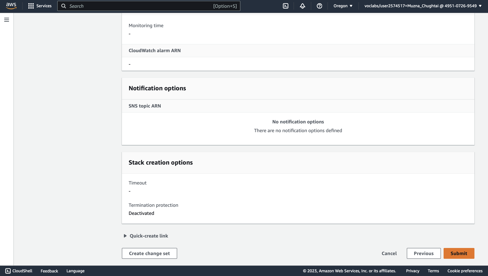
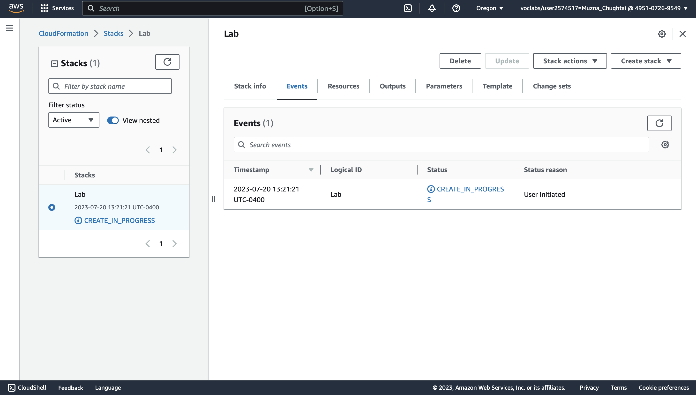
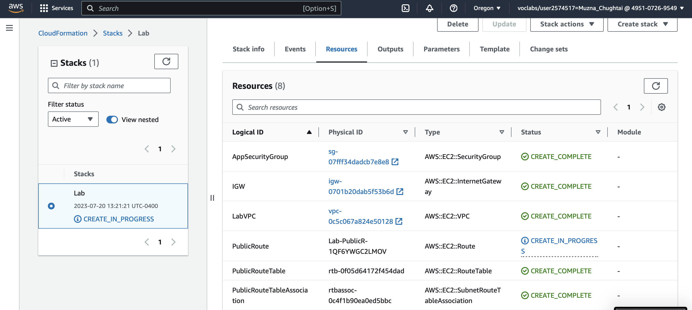
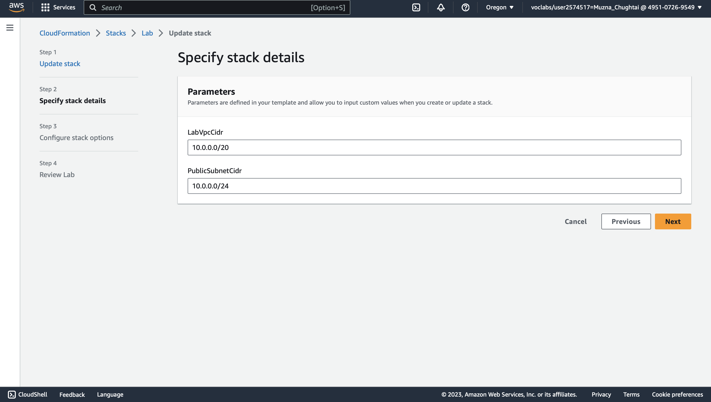
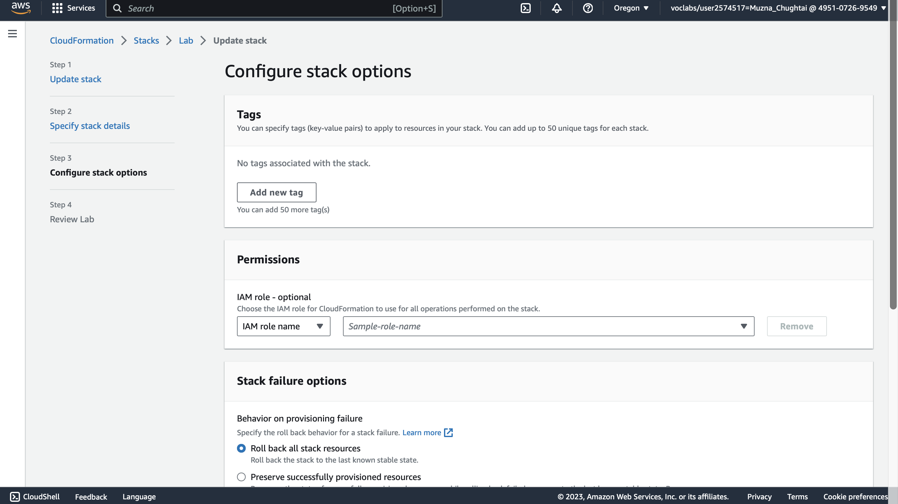
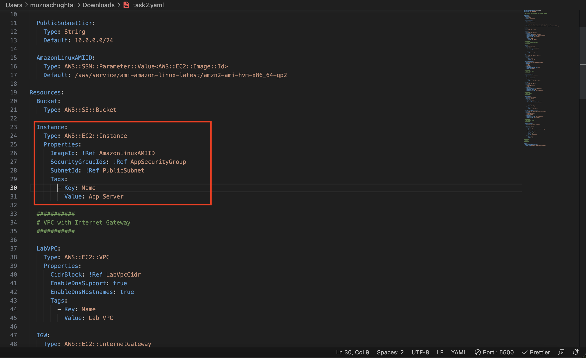

Automating Deployments with AWS CloudFormation
Task 1: Deploy a CloudFormation Stack
In this tasks, we will begin by deploying a CloudFormation stack that creates a VPC and edit CloudFormation template.
In the AWS Management Console, on the Services menu, click CloudFormation.
Click Create stack then:
- Click Upload a template file
- Click Browse or Choose file and upload the template file you downloaded earlier
- Click Next
On the Specify Details page, configure:
- Enter Stack Name
The next page will be the Options page, it can be used to specify additional parameters. we will leave settings at their default values and click Next.
The Review page displays a summary of all settings. Some of the resources are defined with custom names, which can lead to naming conflicts. Therefore, CloudFormation prompts for an acknowledgement that custom names are being used. Here Click Next.
Click Submit
The stack will now enter the CREATE_IN_PROGRESS status.
Click the Events tab and if you scroll through the listing. The listing shows (in reverse order) the activities performed by CloudFormation, such as starting to create a resource and then completing the resource creation. Any errors encountered during the creation of the stack will be listed in this tab.
Click the Resources tab. The listing shows the resources that are being created.
Wait until the status changes to CREATE_COMPLETE.
Task 2: Add an Amazon S3 Bucket to the Stack
In this task, you will gain experience in editing a CloudFormation template. We will add Amazon S3 bucket and then update it in the Stack with revised template.
For creating the template we will add the following code in the Resources section of the template and save the document:
- MyS3Bucket: Type: AWS::S3::Bucket
The Indents are important in YAML, we should use two spaces for each indent
In the CloudFormation console, select Lab and click Update.
Choose Replace current template, then choose Upload a template file. Click Choose file, then browse to and select the task1.yaml file that you modified.and then Click Next.
On the Specify stack details page & On the Configure stack options page we leave the setting as is and submit the stack.
Task 3: Add an Amazon EC2 Instance to the Stack
In this task, we will add an Amazon EC2 instance to the template, then update the stack with the revised template.
First, we open our template and update the template by adding these lines in the Parameters section:
-
AmazonLinuxAMIID:
Type: AWS::SSM::Parameter::Value
This parameter uses the AWS Systems Manager Parameter Store to retrieve the latest AMI (specified in the Default parameter, which in this case is Amazon Linux 2) for the stack's region. This makes it easy to deploy stacks in different regions without having to manually specify an AMI ID for every region.
Now, we update the template to add an Amazon EC2 instance with the following Properties:
- ImageId: Refer to AmazonLinuxAMIID, which is the parameter added in the previous step
- InstanceType: t3.micro
- SecurityGroupIds: Refer to AppSecurityGroup
- SubnetId: Refer to PublicSubnet
- Tags: - Key: Name Value: App Server
Once we edited the template, we update the stack with our revised template file. We will be able to see Instance in the changes section.
Task 4: Delete the Stack
In the CloudFormation console, select the file and click delete stack. The stack will show DELETE_IN_PROGRESS. After a few minutes, the stack will disappear.